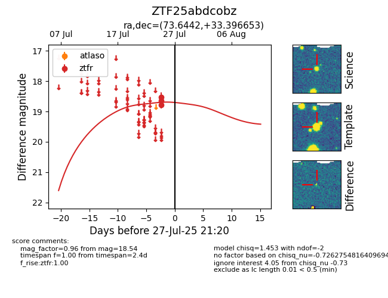

Target ZTF25abdcobz at 2025-07-27 21:20, see:
FINK: fink-portal.org/ZTF25abdcobz
Lasair: lasair-ztf.lsst.ac.uk/objects/ZTF25abdcobz
ALeRCE: alerce.online/object/ZTF25abdcobz
alt names
ZTF25abdcobz (ztf,fink)
coordinates:
equatorial (ra, dec) = (73.6442,+33.39665)
galactic (l, b) = (170.0926,-6.41221)
photometry
last ztfr=18.54
3 ztfr detections
